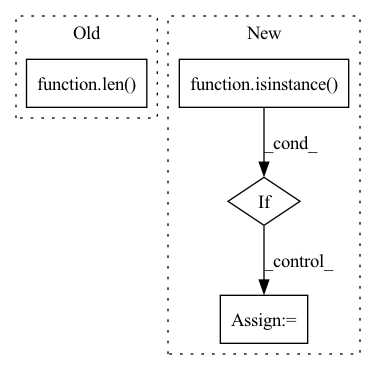

Pattern ID :649
Before Change
if first_input is not None:
// Shape check
if len(first_input[0].shape) > 5 or len( first_input[0].shape) < 2:
err_msg = (
"The input of "linear" must be a tensor with one of the "After Change
self.transp_conv2d = False
// Ensure kernel_size and padding are lists
if not isinstance( self.kernel_size, list):
self.kernel_size = [self.kernel_size]
if self.padding is not None and not isinstance(self.padding, list):
self.padding = [self.padding]
In pattern: SUPERPATTERN
Frequency: 3
Non-data size: 4
Instances Fragment ID: 2354419
Project Name: speechbrain/speechbrain
Commit Name: 0ff34ea8f75b108dc69542658d39b70118bf01ca
Time: 2020-03-31
Author: plantinga.peter@gmail.com
File Name: speechbrain/nnet/architectures.py
M Class Name: conv
N Class Name: conv
M Method Name: __init__(12)
N Method Name: __init__(7)
M Parent Class: nn.Module
N Parent Class: nn.Module
M File Name: speechbrain/nnet/architectures.py
N File Name: speechbrain/nnet/architectures.py
M Start Line: 458
M End Line: 611
N Start Line: 387
N End Line: 516
Fragment ID: 2354417
Project Name: vincentstimper/resampled-base-flows
Commit Name: e77f5004687cb07478007ea712cee947e579b3ed
Time: 2020-10-31
Author: vincent.stimper@gmail.com
File Name: larsflow/nets.py
M Class Name: ConvNet2d
N Class Name: ConvNet2d
M Method Name: __init__(7)
N Method Name: __init__(6)
M Parent Class: nn.Module
N Parent Class: nn.Module
M File Name: larsflow/nets.py
N File Name: larsflow/nets.py
M Start Line: 13
M End Line: 27
N Start Line: 13
N End Line: 35
Fragment ID: 2354416
Project Name: replicable-marl/marllib
Commit Name: a4178c18422c9b841a6b721f855055b8cb360c60
Time: 2022-04-26
Author: hhhusiyi@163.com
File Name: CC/models/onpolicy_rnn.py
M Class Name: Onpolicy_Universal_Model
N Class Name: Onpolicy_Universal_Model
M Method Name: __init__(6)
N Method Name: __init__(6)
M Parent Class: TorchRNN,nn.Module
N Parent Class: TorchRNN,nn.Module
M File Name: CC/models/onpolicy_rnn.py
N File Name: CC/models/onpolicy_rnn.py
M Start Line: 33
M End Line: 110
N Start Line: 33
N End Line: 116